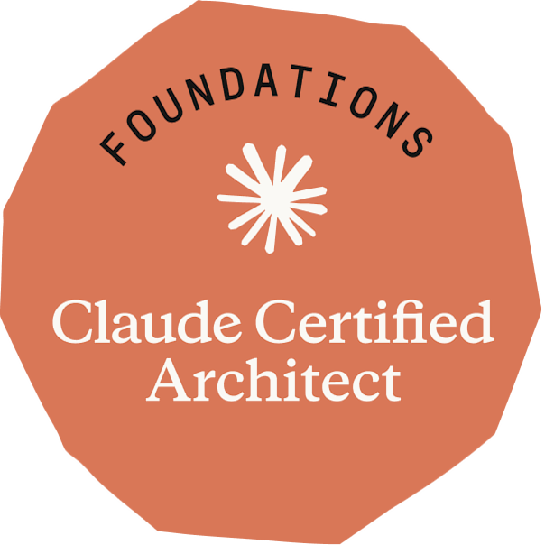
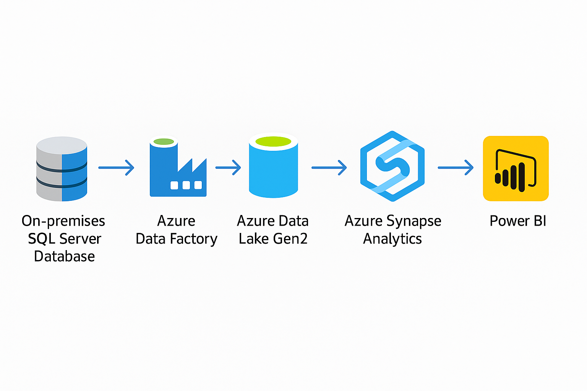

AI Engineering
LLM applications, Agentic AI, multi-agent systems, agent architecture, RAG and intelligent automation.
Hi, I'm Keirishan Balachandran
I adopt an AI-first engineering mindset, combining independent problem-solving, technical expertise, and human judgment to strategically guide, refine, and validate AI-driven outcomes. I leverage AI effectively and responsibly through a human-in-the-loop approach and Specification-Driven Development (SDD). I build multi-agent AI systems, AI-powered automation solutions, scalable data engineering pipelines, and Python backend services. My goal is to advance my career as a Forward Deployed Engineer with a strong foundation in data science, combining AI engineering, data science, and data engineering to deliver reliable, scalable, and production-ready solutions.
01 — About
I specialize in Data Science and AI, with a strong engineering foundation and a focus on developing intelligent, scalable, and production-ready solutions.
My technical expertise spans LLM-powered applications, agentic and multi-agent systems, AI agent architecture design, AI-powered automation, scalable data engineering pipelines, and Python backend services.
I adopt an AI-first engineering mindset, combining independent problem-solving, technical expertise, and human judgment to strategically guide, refine, and validate AI-driven outcomes. I leverage AI effectively and responsibly through a human-in-the-loop approach and Specification-Driven Development (SDD), maintaining technical ownership throughout the engineering process.
My career ambition is to operate at the intersection of Data Science, AI, and Forward Deployed Engineering, combining analytical thinking, technical expertise, and practical engineering to solve complex real-world problems and deliver impactful, scalable, and production-ready solutions.
LLM applications, Agentic AI, multi-agent systems, agent architecture, RAG and intelligent automation.
Machine learning, analytics, ETL/ELT, data pipelines, data warehousing and Microsoft Fabric.
Python, SQL, backend and API development, system integration and low-code development.
Specification-Driven Development, AI-assisted development, solution architecture and workflow automation.
02 — How I build AI
Anyone can call an LLM. Making AI reliable, safe and genuinely useful takes engineering discipline. This is the lifecycle I follow, from the first spec to production. Scroll through the lifecycle.
Goals, constraints and acceptance criteria first
Clean pipelines, RAG and trusted context
The right agent pattern, tools and orchestration
AI-assisted, human-reviewed, tested
Evals, grounding checks and guardrails
Observe, measure and keep improving
Clarity before code, and before prompts
Every AI feature starts as a specification: the problem, the users, the constraints and measurable acceptance criteria. Specification-Driven Development keeps AI work focused, testable and easy to maintain.
AI is only as good as its context
Reliable pipelines and quality-checked data feed the model the right context. Retrieval-Augmented Generation keeps answers grounded in real sources, not guesses.
The simplest design that works
I choose the right pattern for the job: a single LLM call, a workflow, one agent or a multi-agent system. Tools, permissions and orchestration are designed deliberately, not added ad hoc.
AI accelerates; engineers stay accountable
I use AI-assisted development to move faster, while I review, test and own every change. The spec guides the AI, and the tests confirm the result.
Measured, not assumed
Outputs are evaluated against the spec for accuracy and groundedness. Guardrails, least-privilege tool access and prompt-injection defences keep the system safe.
Production is where learning starts
Deployed behind clean APIs, with logging and tracing to watch quality, latency and cost. Real-world feedback flows back into the spec, and the cycle continues.
How I use AI the right way
I use AI where it adds real value, and plain, deterministic code where it doesn't. Not everything needs an LLM.
AI speeds up the work, but I review, test and take ownership of every output and every decision it informs.
Data privacy, least-privilege access and guardrails against misuse are designed in from the start, not added later.
3 years 3 months of industry experience
LOWCODEMINDS · Colombo, Sri Lanka
I deliver AI and data solutions end to end, from requirements and architecture through backend, evaluation and deployment.
Agentic AI platform that automates revenue variance analysis. A LangGraph orchestrator routes billing records to specialised agents for research, trend analysis and contract review, using vector-based memory over emails and contracts to explain anomalies with evidence. I worked on it end to end, from architecture to LLM evaluation, human-in-the-loop validation and monitoring.
End-to-end hiring platform: job creation, resume parsing, AI-assisted candidate matching, interview workflows and onboarding.
Azure OpenAI · RAG · n8n · FastAPI · Next.js
Migrated a legacy enterprise application to .NET, Java and Python, using AI-assisted development to speed up code understanding, migration and validation while keeping engineering quality high.
AI-assisted development · .NET · Java · Python
Built Python backend services for an outlet-management application, integrated MySQL, supported the frontend and helped deploy to the cloud.
Python · FastAPI · MySQL · Cloud deployment
Legal-process automation prototype with AI-assisted workflows on Azure AI Foundry, delivered quickly by choosing a low-code platform that fitted the requirements.
Azure AI Foundry · Low-code · AI workflows
Earlier work
SilverlineIT
Built IoT products (automated irrigation, smart toys) with device telemetry over MQTT and cloud data synchronization through Firebase.
SLT Mobitel – Digital Lab
Developed an IoT-based hybrid energy monitoring system (APMS), collecting sensor data and building real-time dashboards for analysis.
04 — Education & Certifications
Specializing in Data Science Engineering & Analytics
University of Moratuwa
Electronics & Telecommunication Engineering
Sri Lanka Technology Campus (SLTC)
Certifications

05 — Skills
Grouped by how I use them day to day, from AI systems to the data platforms underneath.
06 — Projects

An autonomous agent that takes raw datasets through a five-phase workflow, with quality assessment and validation gates, to produce ML-ready data.

End-to-end Bronze/Silver/Gold pipeline using Data Factory, Data Lake Gen2 and Databricks, served through Synapse and Power BI with Key Vault security.

Scores resumes against job descriptions with NLP keyword matching, simulating an Applicant Tracking System and giving actionable feedback.
07 — Publications & Community
International Research Conference (IRC), Sri Lanka Technology Campus. View on Google Scholar
Professional association membership since 2023.
Sri Lanka Technology Campus. Also a member of the IEEE Student Branch (Jun 2020 – Mar 2024).
08 — Contact
Open to collaborations in AI engineering, data engineering and data science. Send a message and I'll reply within 24 hours.